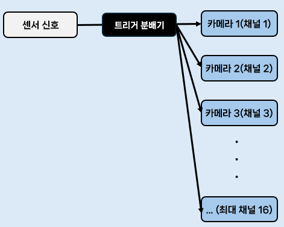

트리거(Trigger)¶
1절. 트리거¶
트리거(Trigger)¶
- 촬영 명령 신호
- 제품이 검사 위치에 도달했을 때 센서가 이를 감지해 카메라에 신호를 보내는 행위
트리거 방식¶
| 종류 | 설명 |
|---|---|
| 하드웨어 트리거 |
- 광전 센서, PLC 등 외부 장치가 전기 신호를 카메라에 직접 전송 - 정밀 동기화가 필요한 시스템에 적합 |
| 소프트웨어 트리거 |
- 컴퓨터가 통신(TCP/IP 등)으로 카메라에 명령 전송 - 컴퓨터(PC)가 카메라에 명령을 내리는 API 호출 or 명령어(SDK의 소프트웨어 함수 호출 등) 전송 필요 - 네트워크/OS 레벨의 지연 존재 |
트리거 타이밍 구성 요소¶
| 구성 요소 | 설명 |
|---|---|
| Trigger Delay | - 트리거 신호를 받은 후 실제 촬영 시작까지의 지연 시간 |
| Exposure Time | - 센서가 빛을 받아들이는 시간 - 노출 시간 |
| Readout Time | - 센서가 이미지 데이터를 읽어내는 시간 |
트리거 펄스 폭¶
- 조명이 켜져 있는 시간 길이
- 조명을 얼마나 짧게 / 오래 킬지 조정 가능
- 외부에서 트리거가 들어오는 경우
트리거 입력 : 카메라 / 센서에 컨트롤러가 찍으라는 신호 전송
컨트롤러 : 신호 수신 후 조명 ON
조명을 얼마나 킬건지 ? => pulse width : 펄스 폭
2절. 트리거 분배¶
트리거 분배(Trigger Distribution)¶
- 다수 카메라 동기화
- 하나의 트리거 신호를 여러 카메라에 동시에 전달하는 시스템
활용 이유¶
- 하나의 대상을 여러 각도에서 동시 촬용
- 3D 스캐닝, 고속 물체의 다각도 검사 등 모든 카메라가 정확히 같은 순간에 촬용 필요
3D 스캐닝¶
- 다수의 라인스캔 카메라
- 입체 재구성하는 경우가 다수
구조¶
- 마이크로초(µs) 단위의 정밀한 동기화 가능

채널¶
- 독립적인 카메라
분배기¶
- 트리거 신호 복제·증폭 후 각 카메라에 동시 분배
- 물리적 신호 감쇠 방지(장거리/ 다수 채널), 신호 품질 보장 측면
- 신호 감쇠 방지를 위해 증폭 기능이 포함된 경우가 다수
3절. 마스터-슬레이브¶
마스터-슬레이브(Master-Slave) 동기화¶
- 멀티 카메라 시스템에서 카메라 간 동기화를 구현하는 방법
동작 방식¶
- 트리거 분배기 없이 카메라 간 연결만으로 동기화 구현
| 카메라 종류 | 설명 |
|---|---|
| 마스터 카메라 | - 보통 외부 트리거나 내부 신호에 의존 - 외부 트리거를 받거나 내부 타이머로 촬영하고 자신의 출력 신호를 슬레이브에 전송 |
| 슬레이브 카메라 | - 마스터에서 출력되는 하드웨어 트리거 출력(OUT)을 물리적으로 연결해 동기화 - 마스터 출력 신호를 트리거로 받아 동기화된 촬영 |
4절. 카메라 프레임¶
프레임 레이트(Frame Rate)¶
- 초당 촬영 가능한 이미지 수(fps)
프레임 레이트와 노출 시간¶
| 최댓값 | 관계식 |
|---|---|
| 최대 프레임 레이트 | 1 / (노출 시간 + Readout 시간) |
| 최대 노출 시간 | (1 / 프레임 레이트) - Readout 시간 |
- 고해상도 카메라는 데이터 양이 많아 낮은 최대 fps 보유
- ex) GigE Vision에서 2MP 카메라는 최대 90fps를, 12.4MP 카메라는 최대 21.4fps
프레임 그래버(Frame Grabber)¶
- 카메라와 컴퓨터 사이 전용 하드웨어 인터페이스
- 고속 데이터 전송과 정밀한 트리거 제어 담당
주요 기능¶
| 기능 | 설명 |
|---|---|
| 하드웨어 레벨 I/O | 저지연 트리거 신호 입출력 |
| 프로그래머블 딜레이 생성기 | 트리거와 촬영 사이의 정밀한 지연 조정 |
| 디바운서(Debouncer) | 센서 신호에 잡음(노이즈)가 있을 경우 신호 이상값 제거 후 트리거 신호의 안정성 보장 |
| 신호 조정 회로 | 입력 신호 증폭/변환 후 안정적인 트리거 보장 |
| 엔코더 지원 | 라인 스캔 카메라에서 컨베이어 이동과 촬영을 정밀 동기화 |
- 소프트웨어 기반 트리거보다 훨씬 낮은 지연시간(2~5µs)과 안정적인 동기화 구현 가능
5절. 정리¶
1. 트리거(Trigger)¶
- 촬영 명령 신호
- 센서가 특정 시점에 카메라에 촬영을 지시하는 역할
구분¶
| 구분 | 설명 |
|---|---|
| 하드웨어 | 센서, PLC 등 외부장치 전기 신호로 직접 명령 |
| 소프트웨어 | 컴퓨터가 명령어로 신호 전송 |
주 타이밍 요소¶
- 신호-촬영까지의 지연(Trigger Delay)
- 노출 시간(Exposure Time)
- 데이터 읽기 시간(Readout Time)
2. 트리거 분배(Trigger Distribution)¶
- 하나의 트리거 신호를 여러 카메라에 동시 분배
- 모든 카메라가 같은 순간에 촬영하도록 동기화
주 활용처¶
- 복수의 카메라가 동시 촬영이 필요한 곳
- 3D 스캐닝, 다각도 검사 등
트리거 분배기¶
- 신호를 증폭해 각 채널(카메라)에 전달
- 마이크로초(µs) 단위 동기화
3. 마스터-슬레이브 동기화¶
- 직접 카메라 간 신호를 전달해 동기화하는 방식
작동 방식¶
- 한 대의 마스터 카메라가 촬영 신호 발생
- 여러 슬레이브 카메라가 해당 신호에 맞춰 동시 촬영
4. 프레임 레이트¶
- 초당 촬영 가능한 이미지 수(fps)
- 노출 시간과 데이터 읽는 시간이 길수록 fps는 하락
5. 프레임 그래버¶
- 카메라와 PC 사이의 하드웨어 인터페이스
- 고속 데이터 전송과 정밀한 트리거 제어 담당
- 신뢰성 있는 촬영 시스템 구축
주요 기능¶
- 저지연 트리거
- 신호 증폭·조정
- 프로그래머블 지연
- 노이즈 정리
- 엔코더 연동